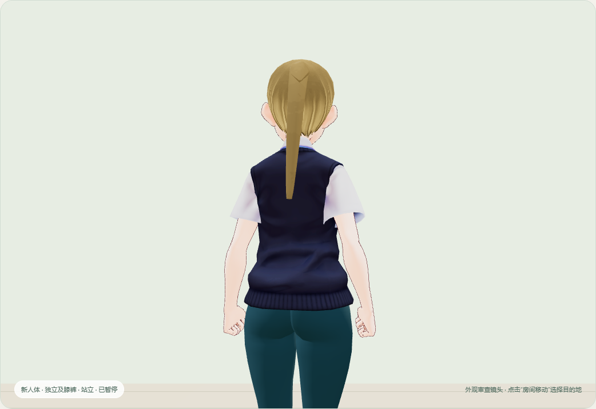
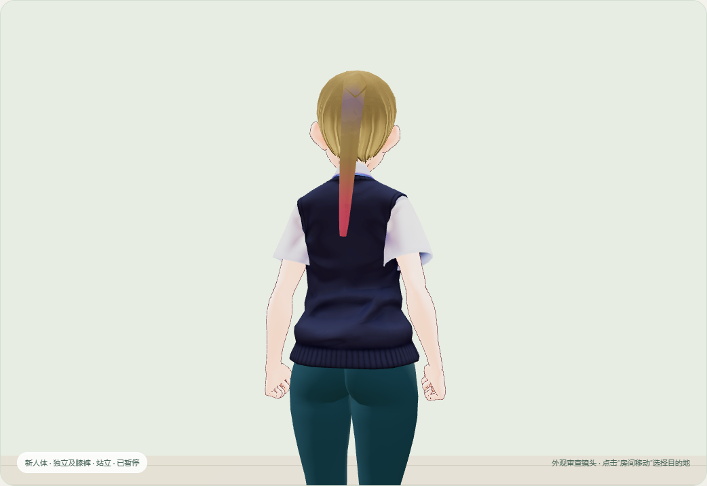
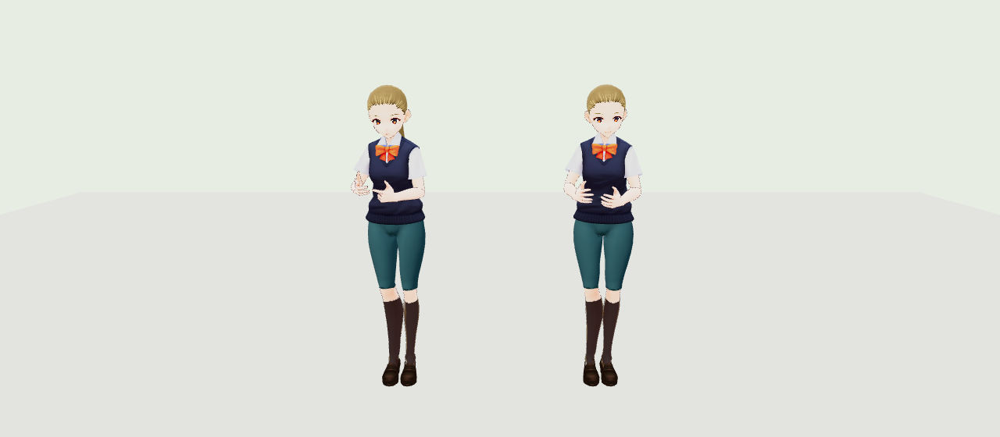

长束发 · 发根与发梢分区配色
原女体使用同一件束发模型。全局发色均为金色，右图在靠近束发根部的位置加上灰紫色，在发梢加上玫红色。固定游戏构建 522c64d40786。
查看背面同镜头

原款金色
分区配色查看房间全景
工作台原速录像
先比较同一静止姿势，再播放分区束发下的行走、坐下和起身。行走速度为 1.05 米/秒。
独立游戏包
两份原签记录分别恢复金色与分区款。首次打开后移除金色角色，关闭后重新打开并移除分区角色。留场角色在两个方向的检查中均继续绘制。

冷开双人 · 分区款单独留场 · 金色款单独留场